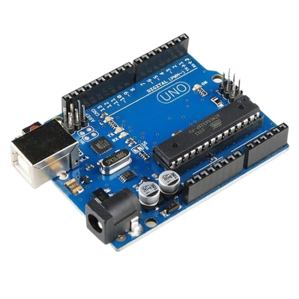

Plataforma IoT • Microcontrolador
Arduino
Base da prototipagem eletrônica e da automação. Permite ler sensores, processar dados e controlar dispositivos.

Conceito
O Arduino é uma plataforma open-source composta por hardware e software, utilizada para desenvolver sistemas embarcados e automação.
- Ler sensores
- Processar dados
- Controlar atuadores
Hardware
Microcontrolador: ATmega328P
Entradas: Digitais e Analógicas
Comunicação: UART, I2C, SPI
Alimentação: 5V ou 7–12V
Clock: 16 MHz
Software
Utiliza a Arduino IDE com linguagem baseada em C/C++.
void setup() {
}
void loop() {
}
Funcionamento
- Entrada: sensores
- Processamento: código
- Saída: LEDs, motores
- Comunicação: computador ou IoT
Características
- Baixo custo
- Fácil uso
- Versátil
- Open-source
Sinais
| Tipo | Descrição |
|---|---|
| Digital | 0 ou 1 |
| Analógico | Valor contínuo |
| PWM | Simulação analógica |
Exemplos de Programação
DHT11
#include <DHT.h>
#define DHTPIN 2
#define DHTTYPE DHT11
DHT dht(DHTPIN, DHTTYPE);
void setup() {
Serial.begin(9600);
dht.begin();
}
void loop() {
float temp = dht.readTemperature();
Serial.println(temp);
delay(2000);
}
HC-SR04
#define trigPin 9
#define echoPin 10
void setup() {
Serial.begin(9600);
}
void loop() {
digitalWrite(trigPin, HIGH);
delayMicroseconds(10);
digitalWrite(trigPin, LOW);
long duracao = pulseIn(echoPin, HIGH);
float distancia = duracao * 0.034 / 2;
Serial.println(distancia);
}